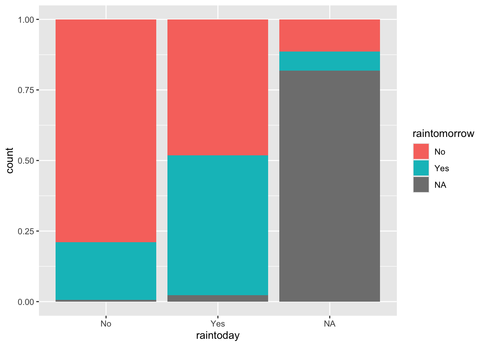

── Attaching core tidyverse packages ──────────────────────── tidyverse 2.0.0 ──
✔ dplyr 1.1.4 ✔ readr 2.1.5
✔ forcats 1.0.0 ✔ stringr 1.5.1
✔ ggplot2 3.5.1 ✔ tibble 3.2.1
✔ lubridate 1.9.3 ✔ tidyr 1.3.1
✔ purrr 1.0.2
── Conflicts ────────────────────────────────────────── tidyverse_conflicts() ──
✖ dplyr::filter() masks stats::filter()
✖ dplyr::lag() masks stats::lag()
ℹ Use the conflicted package (<http://conflicted.r-lib.org/>) to force all conflicts to become errors12 Chapter 5 Notes
12.1 Notes
# Import data
weather <- read.csv("https://mac-stat.github.io/data/weather_3_locations.csv") %>%
mutate(date = as.Date(date))
# Check out the first 6 rows
# What are the units of observation?
# humidity, rain levels, rainbow, temperature, pressure, etc
# How many data points do we have?
# 2367
# What type of variables do we have?
# categorical and numerical13 Plot to examine temp3pm
14 Afternoon temp by location
# Plot 1 (no facets & starting from a density plot of temp3pm)
ggplot(weather, aes(x = temp3pm)) +
geom_density()Warning: Removed 19 rows containing non-finite outside the scale range
(`stat_density()`).
14.1 Location = only Wollongong
woll <- weather %>%
filter(location == "Wollongong") %>%
mutate(date = as.Date(date))
# How often does it raintoday?
# Fill your geometric layer with the color blue.
ggplot(woll, aes(x = raintoday))+geom_bar(fill = "lightblue")
# Now compare different approaches
# Default: stacked bars
ggplot(woll, aes(x = raintoday, fill = raintomorrow)) +
geom_bar()
# Side-by-side bars
ggplot(woll, aes(x = raintoday, fill = raintomorrow)) +
geom_bar(position = "dodge")
# Proportional bars
# position = "fill" refers to filling the frame, nothing to do with the color-related fill
ggplot(woll, aes(x = raintoday, fill = raintomorrow)) +
geom_bar(position = "fill")
14.2 Example 4

14.3 Example 5
# Plot temp3pm vs temp9am
# Change the code in order to indicate the location to which each data point corresponds
ggplot(weather, aes(y = temp3pm, x = temp9am)) +
geom_point("Hobart" = "lightblue", "Uluru" = "lightgreen", "Wollongong" = "lightyellow")Warning in geom_point(Hobart = "lightblue", Uluru = "lightgreen", Wollongong =
"lightyellow"): Ignoring unknown parameters: `Hobart`, `Uluru`, and
`Wollongong`Warning: Removed 27 rows containing missing values or values outside the scale range
(`geom_point()`).